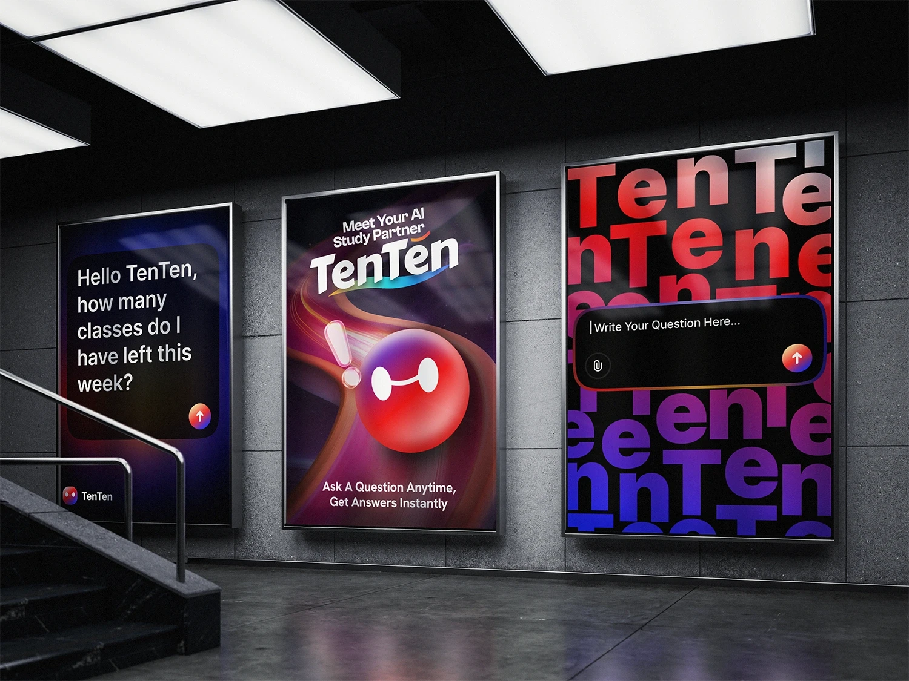
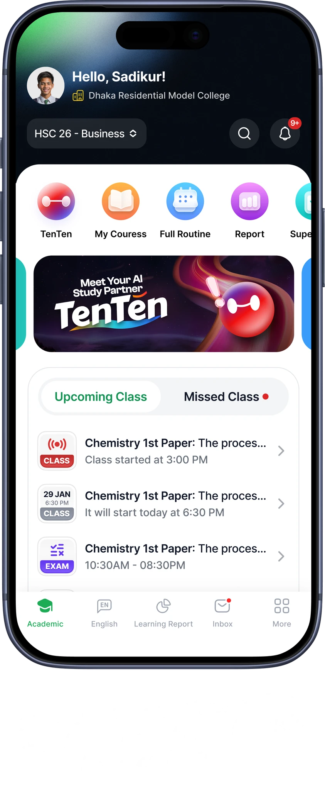
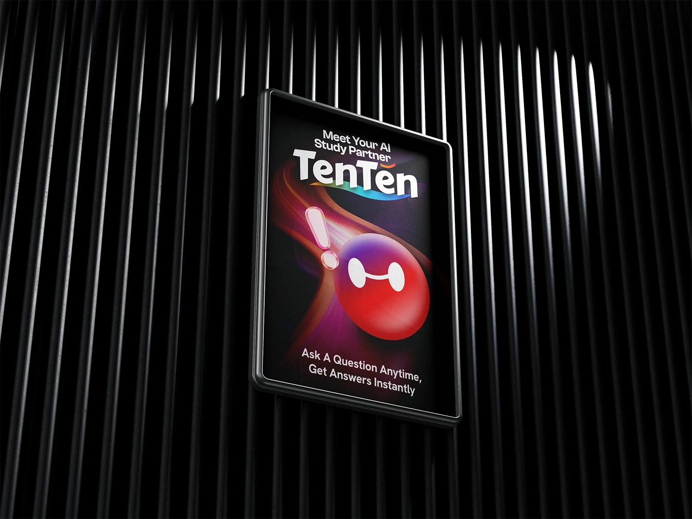

Understand the behavior
Funnels, cohorts, feature usage, growth loops, and user behavior translated into product priorities.
Assistant Manager of Business Intelligence and Specialist AI Systems Developer
I’m Uttam Deb, an experienced BI analyst and AI systems developer building the analytics, automations, and AI learning tools that shape some of Bangladesh's biggest education products.

My work sits between product, business, and AI systems. The goal is not just better charts, but sharper choices.
Funnels, cohorts, feature usage, growth loops, and user behavior translated into product priorities.
Dashboards, pipelines, reporting logic, and governance that make teams faster and more confident.
Speech agents, doubt-solving assistants, RAG systems, and evaluation loops built around real learning problems.

A simple walkthrough of how I usually create value: understand the pattern, build the system, then make the product smarter.
Good analytics starts before visualization. I map the business question, the event trail, and the cost of being wrong, then turn that into a surface people can actually use.
The strongest AI features do not need to shout. They shorten a student's path to understanding, reduce operational drag, and create feedback loops that improve the product.

Reports, product concepts, and analysis decks are not decoration. They are decision tools, so the structure needs to carry the reasoning clearly.

A few entry points into my work across AI product thinking, analytics implementation, performance, and user behavior.

Architecture notes on modular and end-to-end approaches for voice AI systems.

A practical guide to web and app traffic analysis using modern analytics tooling.

A Kaggle analysis translating health activity data into business recommendations.
The homepage tells the story. The work archive keeps the projects, articles, experiments, and older pieces easy to scan.
If you’re building a product where data, AI, and decisions need to meet, let’s talk.
Off hours
A few quiet frames from outside work, because not every useful thing has to be a product.